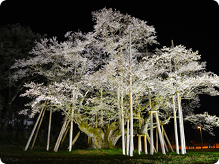
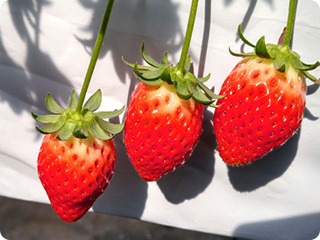
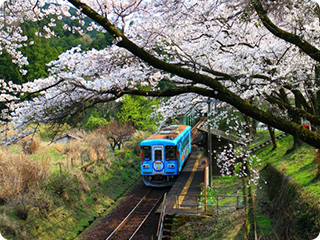
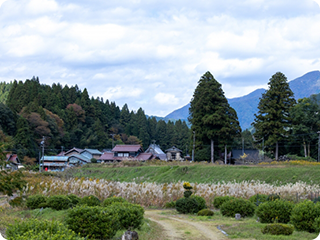
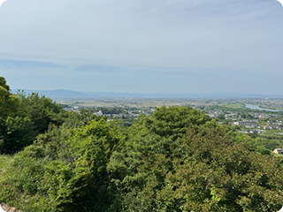
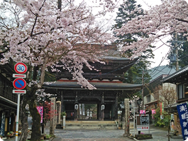

周辺ガイド
周辺・観光情報
金原里山キャンプ場周辺のお店や観光地をご紹介します。
食材・買い物・温泉
食材・買い物・温泉
-

根尾谷淡墨ザクラ
樹齢1500余年を誇る孤高の桜。
山梨県の「山高神代桜」と福島県「三春滝桜」と並んで日本三大桜のひとつに数えられ、国の天然記念物に指定されています。 -

つみつみいちごファーム
岐阜ブランド”濃姫”37,000株を減農薬で栽培しています。ミニトマトの摘み取り（量り売り）にも多くの方が来られます。併設のCafeでは、オリジナルのヨーグルトやいちごのスイーツを提供しています。
-

樽見鉄道 日当駅
桜の時期には多くの鉄道ファンが訪れる人気の映えスポットです。
秋には山々の紅葉を楽しめる写真スポットでもあります。 -

根尾谷地震断層観察館
地震についてさまざまな視点から学習できる総合施設です。
館内では、観察・学習・体験を通して地震に関する知識を得ることや、過去の震災から教訓を学びとることができます。 -

もんじゅの森ふれあい館
公園内にはバーベキューテラス・宿泊コテージもあり、楽しめる施設も充実しています。
文殊の森公園には癒し効果が科学的に検証された「ササユリの道」というセラピーロードがあります。
心身ともにリフレッシュしながら、秋の紅葉も楽しめます。 -

谷汲山華厳寺
西国３３番満願霊場で、「谷汲さん」の愛称で親しまれている華厳寺。
飛騨・美濃桜３３選の地、飛騨・美濃紅葉３３選の地に選ばれ、春は、谷汲山門前の桜が、秋はもみじまつりが開催され、土産物屋が並ぶ参道は、参拝者でいっそう賑やかになります。